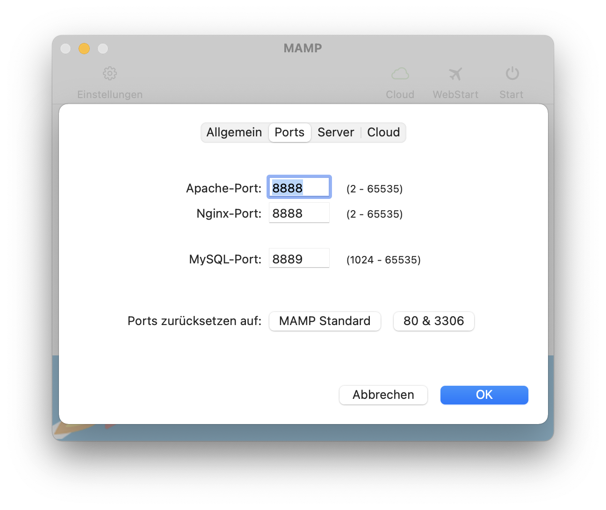
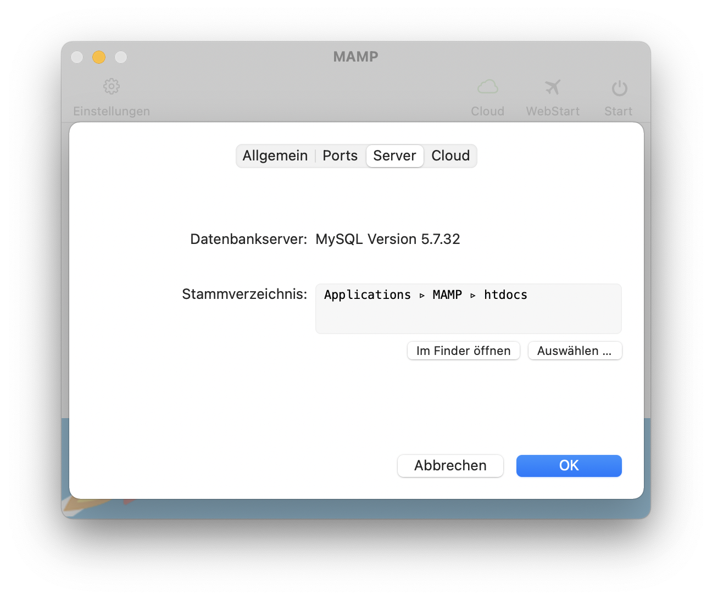
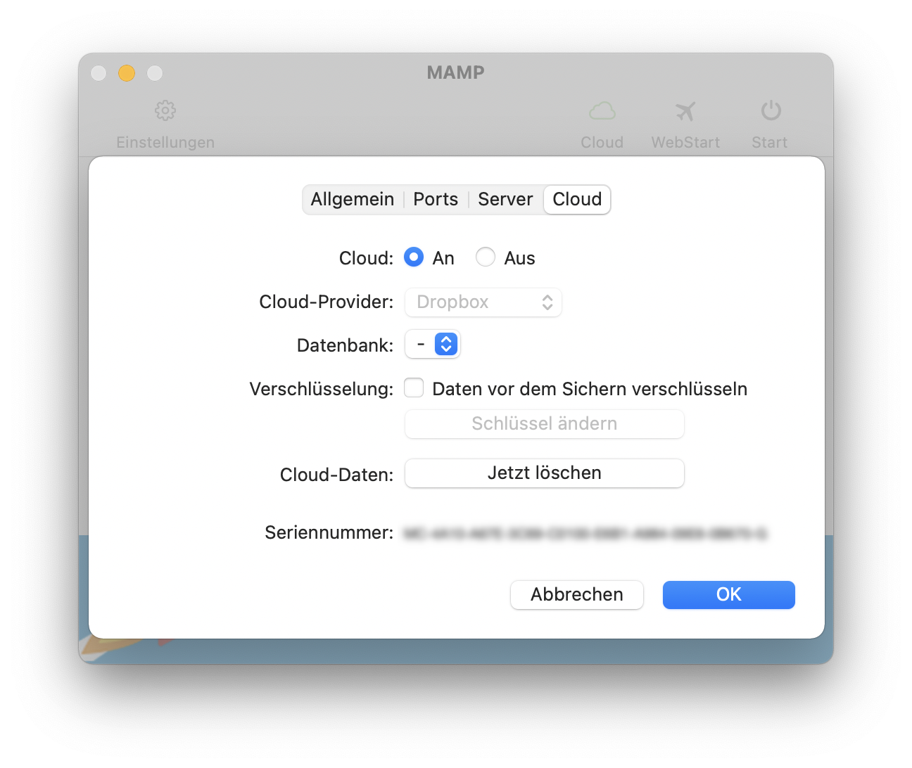

FAQ
Wo kann ich die Ports für Apache, Nginx und MySQL ändern?
Sie können sie im Bereich "Ports" des Einstellungsdialogs ändern:

Wo soll ich meine PHP- und HTML-Seiten abspeichern?
Nach der Installation von MAMP ist das Stammverzeichnis des Webservers, auch "Document Root" genannt, auf den Ordner "/Programme/MAMP/htdocs" eingestellt. Sie können jeden anderen Ordner verwenden, Sie müssen nur Schreib- und Leserechte für ihn besitzen. Den Pfad für das Stammvereichnis können Sie jederzeit in den Einstellungen ändern:

Was ist MAMP Cloud?
Die beliebte Cloud-Funktion aus MAMP PRO ist auch in MAMP verfügbar. MAMP Cloud ermöglich es Ihnen, Ihre Host- und Datenbankdaten zu Dropbox zu sichern. Mit nur einem Klick können Sie ganz einfach Ihre Projekte in der Cloud sichern und jederzeit auf einem anderen (oder dem selben) Computer wieder laden.

Wie kann ich das Kennwort für den Benutzer "root" des MySQL-Server ändern?
Öffnen Sie das Terminal und schreiben folgenden Befehl:/Applications/MAMP/Library/bin/mysqladmin -u root -p password <NEUESKENNWORT>
Anstelle von <NEUESKENNWORT> müssen Sie das gewünschte Kennwort eingeben. Wenn es Leerzeichen enthält, setzen Sie es bitte in doppelte Anführungszeichen. Ehe der Befehl das neue Kennwort setzt, frägt er Sie noch nach dem aktuellen.
Bedenken Sie, dass dannach auch das Kennwort für phpMyAdmin und andere Skripte, welche unter MAMP laufen, geändert werden muss. Das Kennwort für phpMyAdmin können Sie in der Datei "/Applications/MAMP/bin/phpMyAdmin/config.inc.php" ändern.
Warum werde ich nach meinem Kennwort gefragt, wenn MAMP die Server startet oder beendet?
Sie haben wahrscheinlich den Apache-Port kleiner als 1024 eingestellt. Bei einem Unix-System, wie macOS, benötigen Sie Root-Rechte um IP-Dienste mit Ports kleiner als 1024 zu starten.
Welche Versionen der enthaltenen Programme sind installiert?
- Apache 2.4.46
- Nginx 1.19.2
- MySQL 5.7.34
- PHP 5.4.45, 5.6.40, 7.1.33, 7.2.34, 7.3.29, 7.4.21 & 8.0.8
- APC 3.1.13/APCu 4.0.11 & 5.1.19 (5.1.20)1
- eAccelerator2 0.9.6.1
- XCache2 1.2.2 & 3.2.0
- Xdebug 2.2.7, 2.4.1, 2.5.5, 2.9.8 & 3.0.3 (3.0.4)1
- Perl 5.30.1
- mod_perl 2.0.11
- Python 2.7.13 (2.7.18)1
- mod_wsgi 3.5
- mod_python 3.5.0
- Ruby (with Rails) 2.6.5 (5.2.3)
- phpMyAdmin 4.9.7 & 5.1.1
- phpLiteAdmin 1.9.8-2
- Freetype 2.6.5
- OpenSSL 1.0.2u
- curl 7.68.0
- jpeg 9c
- libpng 1.6.37
- tiff 4.1.0
- Ghostscript 9.20
- ImageMagick 6.9.6-2
- Imagick 3.1.2 & 3.4.4
- gd 2.2.3
- zlib 1.2.11
- ICU 56.1 (Unicode 8.0)
- libxml2 2.9.4
- libxslt 1.1.28
- gettext 0.20.1
- libidn 1.17 (1.28)1
- iconv 1.16
- mcrypt 2.5.8
- OAuth 1.2.3 & 2.0.7
- YAZ 5.16.0 & PHP/YAZ 1.2.3
- t1lib 5.1.2
1 Version in Klammern ist M1-Version.
2 Für M1-Prozessor nicht verfügbar